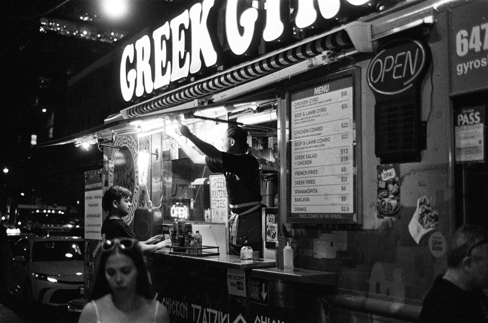
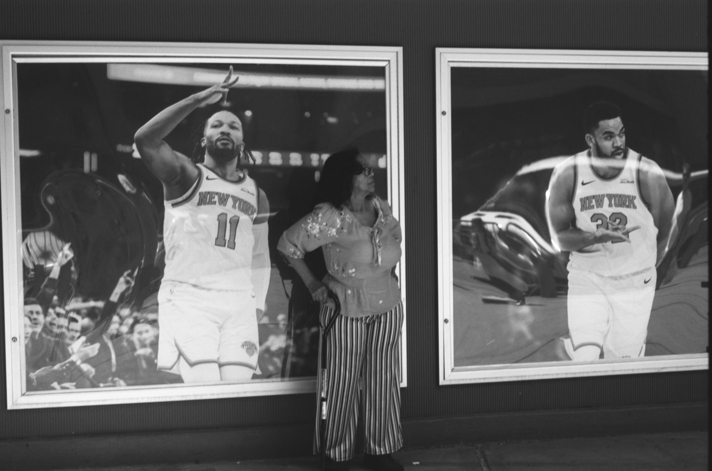

Arthur Gao
turning code into campfire stories
Experience(06)
01 — 06-
01
Senior Software Engineer (Pickford AI)
Sept 2024 - Present -
02
Research Assistant (University of Toronto)
Feb 2024 - Sept 2024Developed and refined various data parsing methods and algorithms to parse semi-structured data into consistently structured data enabling further research.
law.utoronto.ca -
03
CSC258 Teaching Assistant (University of Toronto)
Winter Semester 2023 & 2024Provided technical support to students by troubleshooting labs, grading tests, and answering questions on digital logic and MIPS assembly.
cs.toronto.edu -
04
Web Developer (Bank of Canada)
May - Sept 2023Worked on the web team developing new features and performing bug fixes for all external and internal bank websites in an Agile development environment.
bankofcanada.ca -
05
Director of Safety (U of T Ski and Snowboard Club)
2022 - 2024As Director of Safety for the University of Toronto Ski and Snowboard Club, I spearheaded an eight-member Crisis Management Response Team, ensuring readiness for challenges at large-scale ski events. My ability to think decisively under pressure was essential in rapidly implementing solutions to unforeseen trip complications, positively impacting the experience of over 1000 attendees.
utssc.com -
06
Director of Video (National Stiltwalkers of Canada)
June - Sept 2021Directed software and photography for two live shows reaching over 5,000 viewers, including a camera-tracked green-screen virtual set built in Unreal Engine.
nationalstiltwalkersofcanada.com
Projects(06)
07 — 12-
An animated, episodic interactive AI thriller where the live audience are the voices in the detective’s head. I’m Technical Director and co-invented the story loop that turns audience chat into story in near real time.
Read the project -
An internal tool that carries a ticket through LLM agents to a reviewed, landed change. I led it; this write-up covers the merge side: stacked-PR orchestration, a live-checked merge queue, and red/yellow/green triage.
Read the project -
A self-play AI for Shengji (Tractor), the four-player Chinese trick-taking game: a Rust engine, a PyTorch card transformer trained with Deep Monte-Carlo self-play, PIMC endgame search, and an Elo league.
Read the project -
An embedded chess project that incorprated a custom PCB with 3D printed parts and software written in Rust to create a chessboard that detects the position of pieces and highlights possible moves when a piece is picked up
Read the project -
A software project to lower the barrier of entry to animated storytelling. We developed an application that allows upper elementary and middle school aged students access to animation and projection mapping as a medium for storytelling. This project is being developed for test runs in Toronto classrooms.
Read the project -
A research project involving counsels petitioning for cases to SCOTUS. The data gathered had a semi-formatted 'counsels' field and as such required parsing. We ran the data through a parsing algorithm that involved GPT-4, extracting formatted data from the dataset to do further research on.
Read the project
Film(06)
Nikon F4 · 50mm f/1.8D · 35mmI love film because it’s tactile. I spend my working hours on a computer, researching and building with AI. Film is the opposite: it’s physical, it was there with you, and it tells a story.




About
I turn code into campfire stories. As a senior software engineer at Pickford AI, I lead R&D on our story engine and the core story loop at its heart, the system that lets a live audience shape an AI-generated story in real time. I’m Technical Director on Whispers, an Emmy®-finalist interactive thriller built on that loop, which is presented in two NeurIPS 2026 Creative AI papers.
Canadian Citizen and US Permanent Resident. No Sponsorship Required.